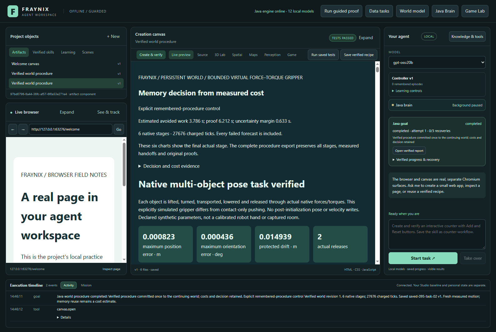
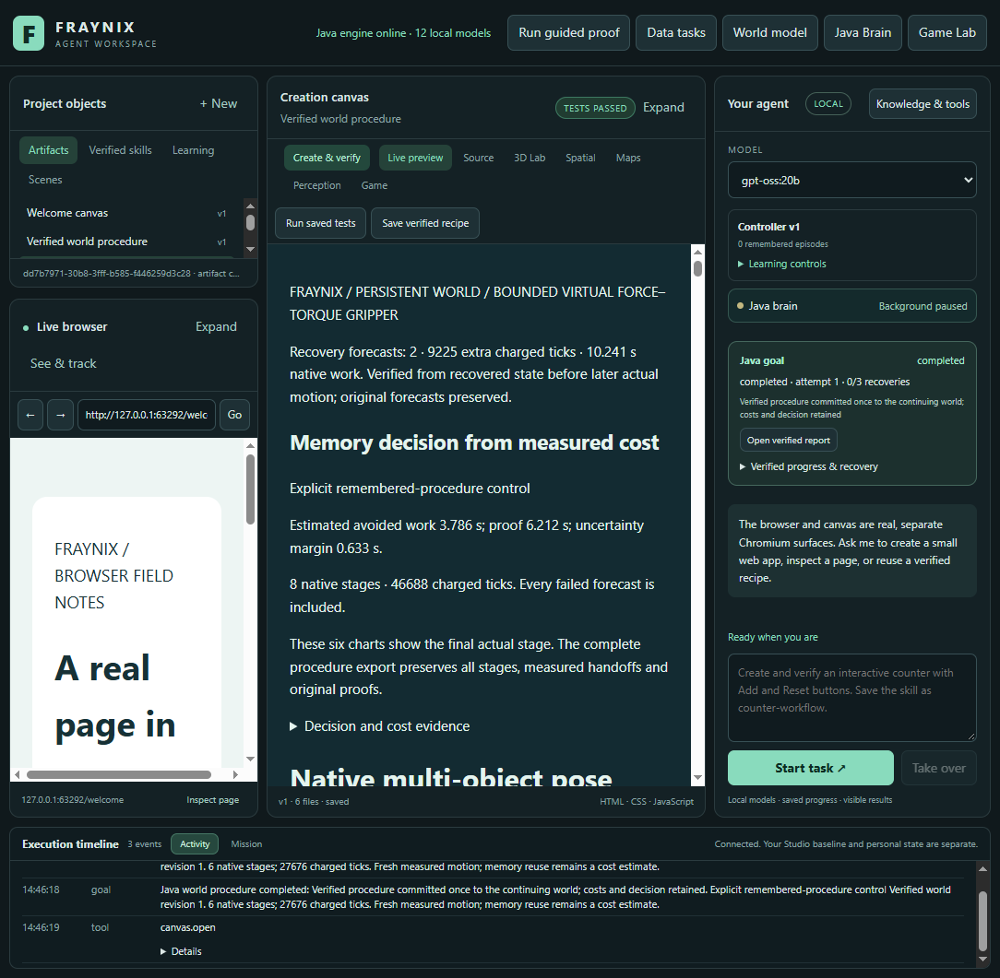

FRAYNIX AGENT WORKSPACE · EDITION 095
Count the whole task.
Keep the proof.
Original Java/native outcomes from declared synthetic scenes. All 334 production classes unchanged from edition 094. Cold proof lookup, recovery, skill saving and later verification are included where declared.
One verified memory. Complete task accounting.
Same starting evidence
Earn the memory, close its project, verify the copied bytes. Both controls start with the same cold preparation.
Actual work
Use simple or remembered control. Execute native motion, verify the report, commit, and save when requested.
Durable result
Reopen, check the world and saved skill, and audit original motion. Test saved skills again on fresh worlds.
Full-suite status: the earlier GitHub run still has four failures—construction schema, a historical source lock, and two heap exhaustions. Focused 095 results do not claim a green full suite. See the README for the original reports and next repair gate.
The two controls run in opposite orders across two blocks. Related cases and two repetitions do not establish a population confidence interval. No fitting or weight training occurs.
Matched task comparisons
| Condition | First | Simple goal | Memory goal | Whole saving |
|---|
Positive saving means memory was faster. Whole iteration includes experimental copying, export and independent cold audits. The goal column isolates the complete app call, including recovery and requested saving. Failed outcomes cannot earn a benefit label.
Preparation and prefix balance
Where the time went
Restart is nested inside the goal interval and is not added again. Resumed Java totalMillis = 0 means unavailable, not free. The external clock survives the Java stop; these observations are not admitted into calibration.
Verification remains the authority
- Original source and plan identities, protected-body traces and forecast comparisons recomputed.
- Every successful task has actual report checks and one matching world commit.
- Exact-owned-PID interruptions preserve every committed prefix; explicit resume is required.
- Cold reopening checks world, memory and saved skill; two saved procedures execute on fresh worlds.
- Costs retain setup, saving, recovery, failed alternatives and additional audit overhead.
Verification record · Exact original archive · Source inventory
Recorded final-stage motion
Top-down projection of actual recorded body centers, sizes and yaw. This is a replay of selected final actual stages, not a new simulation or a full 3D rendering. Full original traces retain rotations, velocities, contacts and every earlier stage.
Current body positions (x, y, z in metres):
The actual integrated app
Captured after measured work. Java owns the goal and verification; the existing canvas shows its actual report. Screenshot sessions are outside the paired timing windows.


2026-11-08 · Contributor contract · Original evidence preserved. Physical accuracy and general intelligence are outside this study.